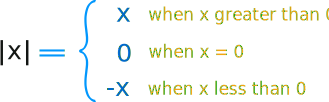
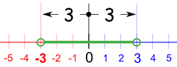
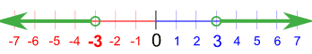

Absolute Value in Algebra
Absolute Value means ...
... how far a number is from zero:

"6" is 6 away from zero,
and "−6" is also 6 away from zero.
So the absolute value of 6 is 6,
and the absolute value of −6 is also 6
Absolute Value Symbol
To show we want the absolute value we put "|" marks either side (called "bars"), like these examples:
| |−5| = 5 | |7| = 7 |
| The "|" can be found just above the enter key on most keyboards. |
More Formal
More formally we have:

Which says the absolute value of x equals:
- x when x is greater than zero
- 0 when x equals 0
- −x when x is less than zero (this "flips" the number back to positive)
So when a number is positive or zero we leave it alone, when it is negative we change it to positive using −x.
Example: what is |−17| ?
Well, it is less than zero, so we need to calculate "−x":
− ( −17 ) = +17
(Because two minuses make a plus)
Useful Properties
Here are some properties of absolute values that can be useful:
- |a| ≥ 0 always!
That makes sense ... |a| can never be less than zero.
- |a| = √(a2)
Squaring a makes it positive or zero (for a as a Real Number). Then taking the square root will "undo" the squaring, but leave it positive or zero.
- |a × b| = |a| × |b|
Means these are the same:
- the absolute value of (a times b), and
- (the absolute value of a) times (the absolute value of b)
Which can also be useful when solving
- |u| = a is the same as u = ±a and vice versa
Which is often the key to solving most absolute value questions.
Example: Solve |x+2| = 5
Using "|u| = a is the same as u = ±a":
Which has two solutions:
| x+2 = −5 | x+2 = +5 |
| x = −7 | x = 3 |
Graphically
Let us graph that example:
|x+2| = 5
It is easier to graph when we have an "=0" equation, so subtract 5 from both sides:
|x+2| − 5 = 0
So now we can plot y=|x+2|−5 and find where it equals zero.
Here is the plot of y=|x+2|−5, but just for fun let's make the graph by shifting it around:
|  | ||
| Start with y=|x| | then shift it left to make it y=|x+2| |
then shift it down to make it y=|x+2|−5 |
And the two solutions (circled) are −7 and +3.
Absolute Value Inequalities
Mixing Absolute Values and Inequalites needs a little care!
There are 4 inequalities:
| < | ≤ | > | ≥ | |
|---|---|---|---|---|
| less than | less than
or equal to |
greater than | greater than
or equal to |
Less Than, Less Than or Equal To
With "<" and "≤" we get one interval centered on zero:
Example: Solve |x| < 3
This means the distance from x to zero must be less than 3:

Everything in between (but not including) -3 and 3
It can be rewritten as:
−3 < x < 3
As an interval it can be written as:
(−3, 3)
The same thing works for "Less Than or Equal To":
Example: Solve |x| ≤ 3
Everything in between and including -3 and 3
It can be rewritten as:
−3 ≤ x ≤ 3
As an interval it can be written as:
[−3, 3]
How about a bigger example?
Example: Solve |3x-6| ≤ 12
Rewrite it as:
−12 ≤ 3x−6 ≤ 12
Add 6:
−6 ≤ 3x ≤ 18
Lastly, multiply by (1/3). Because we are multiplying by a positive number, the inequalities will not change:
−2 ≤ x ≤ 6
Done!
As an interval it can be written as:
[−2, 6]
Greater Than, Greater Than or Equal To
This is different ... we get two separate intervals:
Example: Solve |x| > 3
It looks like this:

Up to -3 or from 3 onwards
It can be rewritten as
x < −3 or x > 3
As an interval it can be written as:
(−∞, −3) U (3, +∞)
Careful! Do not write it as
−3 > x > 3 
"x" cannot be less than -3 and greater than 3 at the same time
It is really:
x < −3 or x > 3 
"x" is less than −3 or greater than 3
The same thing works for "Greater Than or Equal To":
Example: Solve |x| ≥ 3
Can be rewritten as
x ≤ −3 or x ≥ 3
As an interval it can be written as:
(−∞, −3] U [3, +∞)